x64汇编寄存器写和跳转
前置知识
x64 汇编和 x32 汇编在大体上是大差不差的，但是有些细节点有所不同，这里的不同点主要是指硬编码的不同，硬编码就是比汇编语言更靠近 cpu 的东西，可以说是很接近 cpu 可以读懂的01比特流了。
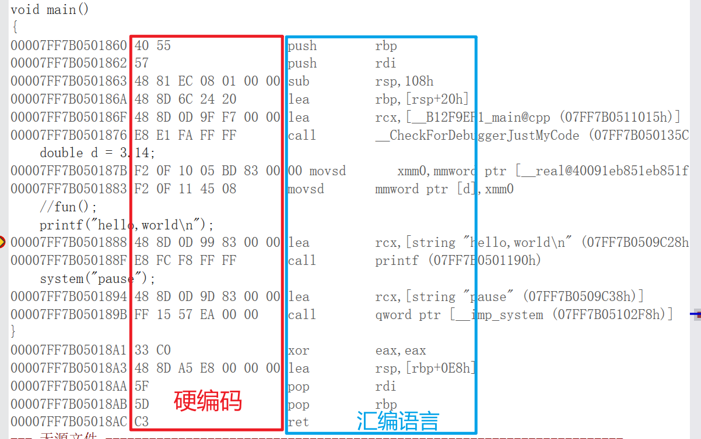
x64汇编所对应的通用寄存器和虚拟地址空间如图所示
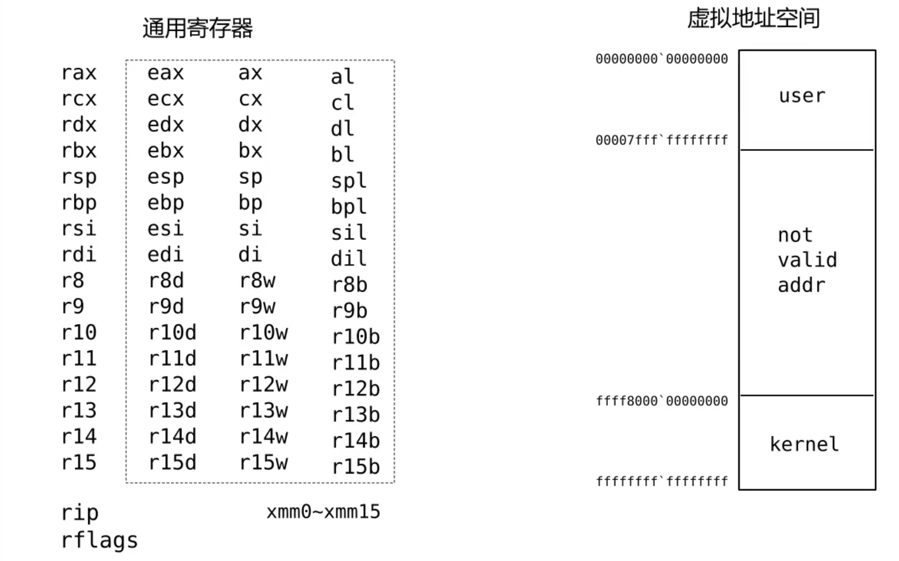
x64汇编所对应的寄存器大小为64位，这64位是可以拆出一个32位寄存器来使用的，而32位寄存器可以拆出一个16位寄存器来使用，16位寄存器可以拆成一个高8位和一个低8位来使用，如上图所示：rax、eax、ax、al 这些都是可以出现在 x64 汇编中的。
在 x64 中，用户可以使用的内存空间是最上面那一段，从 00000000’00000000 到 00007ffff’ffffffff，地址虽然有64位，但是有效的长度只有48位，对于应用程序来说地址的高4位永远是0，如果是内核程序高4位则永远都是f。
增加的寄存器的位数用符号扩展的方式将用户区和内核区隔离开来。
x64寄存器的写操作
32位写操作高32位清零
只要对32位寄存器进行写操作，相应的64位寄存器的高32位清零，其中写操作也包含了运算结果自动的储存操作。
对 eax 进行 mov 操作前后的状态，rax 的高8位从非0变成了0
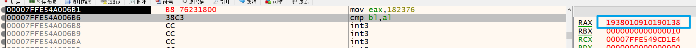
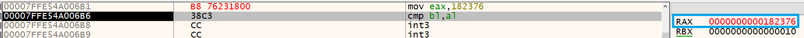
对 eax 进行运算操作后，前32位也会被清零
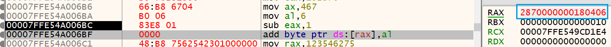
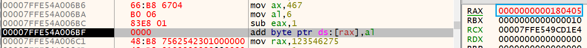
但是如果仅仅对 ax 或者 al 进行操作并不会对高位产生影响
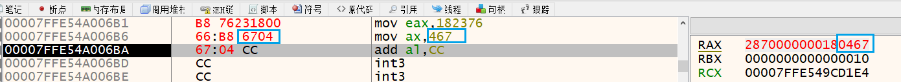
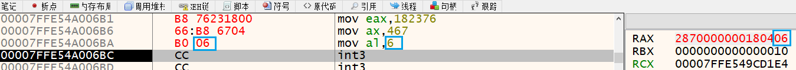
对于这一点我们所要意识到的东西是：对于一些指令，尽管操作的对象不一样，但是实现的效果可能是一模一样的，因此在对程序编译操作的时候尽管你写的是64位，但是编译器依旧使用32位。
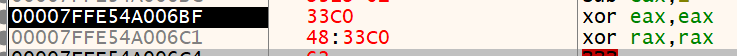
上面的两个语句进行的操作都是对 rax 进行置0，但是他们的硬编码是不一样的
立即数优先使用32位扩展
当我们想使用立即数对寄存器进行赋值时，如果所使用的立即数长度没有超过32位时会优先使用。
我对这条指令进行修改，所要修改的汇编指令是 mov rax,0x01
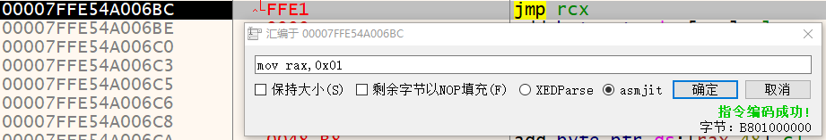
由于优先扩展，这条指令会被自动变为 mov eax,0x01
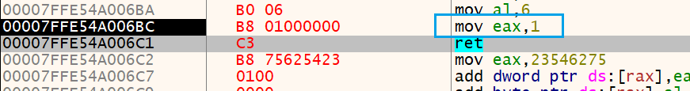
以下是立即数的使用的 3 个语句，可以体会这之间的差别
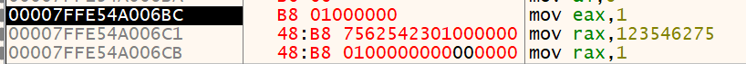
下面就是立即数使用32位优先扩展的程序例子，所要返回的是64位的数字，由于32位立即数的指令比较短，所以编译器优先使用32位。
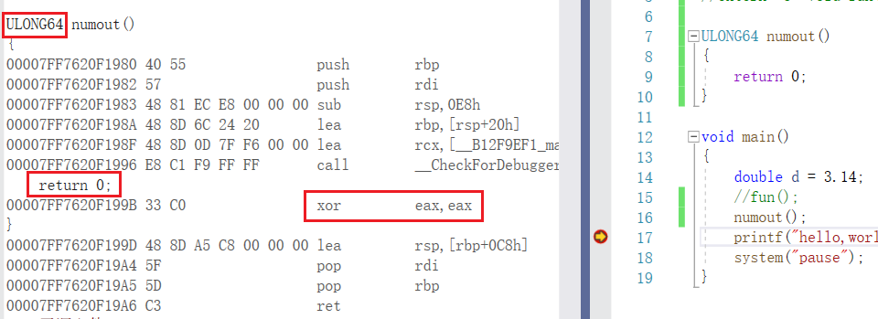
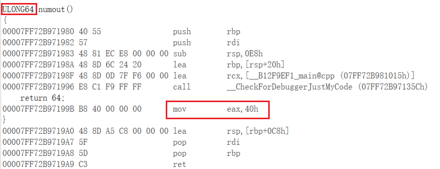
虽然在效果上面没有什么差别，但是由于硬编码的不同会导致内存地址存储和所想的有偏差
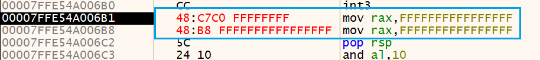
上面的两个汇编指令是一模一样的，但是它们的硬编码不同，这个不同就是我们所要注意的，尤其是当我们在对内存地址上面做文章的时候。
上述总结： 在32位编译器可用的情况下，编译器一般都会优先使用32位寄存器来代替使用，因为32位寄存器编译后的长度相对较短，对于 CPU 的运算更友好些。
x64中的 jmp 操作
其实这个和32位和16位的jmp指令比较类似，它们也都是优先偏移地址寻址，应该只是偏移地址的大小不太相同(还未求证)，在 x64 汇编中跳转范围在4个字节 -2GB~2GB 之间使用的都是偏移地址跳转。
什么是偏移地址
所谓的偏移地址就是：将某一地址作为起始地址，目的地址到这个起始地址的偏差。
举个简单的例子：
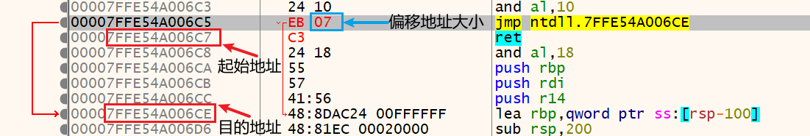
如上图所示，很明确使用的是偏移地址跳转，在硬编码 EB 07 中我们是找不到目的地址这个数值的，而 07 的来源就是起始地址和目的地址的差值，起始地址是该指令下一条指令的地址。
偏移地址跳转
下图中绿色为偏移地址复制，红色为绝对地址赋值，这里可以好好体会一下
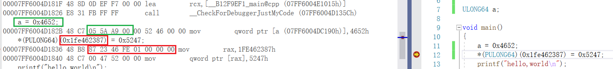
因为偏移地址跳转有大小的限制，也就是正负 2GB 的限制，因此我们在使用偏移地址跳转的时候需要注意地址的有效值
EB 和 E9 跳转
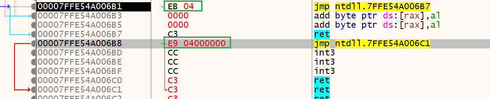
都是偏移地址大小为 4 的跳转
- EB 的起始地址是当前指令下一条指令的地址，EB是1字节跳
- E9 的起始地址是当前指令的地址，E9是4字节跳，跳转范围是正负2GB，在使用 E9 的时候一定要注意跳转地址的范围
E9跳转在 hook 上面使用较多。
FF25 跳转
该跳转的意思是跳转到所指向的目的地址的内容里的地址。非常绕，也就是说偏移地址所指向的目的地址并不是所要跳转的目的地址，偏移目的地址里面的内容才是。
举个例子就很明了了
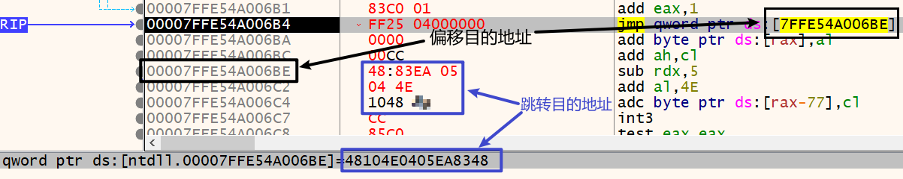
虽然这个跳转目的地址很显然是会报错的，但是没关系，懂意思就好
FF25在导入导出表上面使用较多，在跳转地址范围超出正负 2GB 的时候也可以使用该指令，只需要在偏移目的地址的8个字节内写入想要跳转的目的地址即可。
bug
在 ida 里面，这里有个小 bug，下图的汇编和上面偏移地址跳转示例相匹配
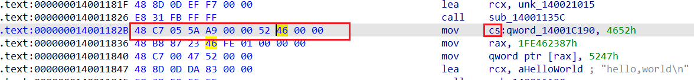
由于是相对偏移地址寻址，而起始地址在 cs 段，因此在 ida 中对于偏移地址寻址它的默认段是 cs 段，但其实这个是不对的
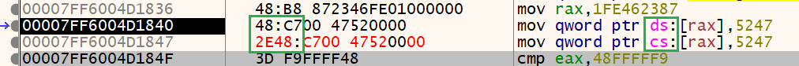
因为段地址的不同会导致硬编码的前置数字的不同，cs 段的前缀比 ds 段多了个 2E
虽然段地址有标注错误，但是对于这个错误实际上是没有什么影响的，因为在 x64汇编中已经取消了段地址保护这个概念。这里不细说，在之后的内核中会提到。
上述总结： 内存优先使用相对偏移地址寻址，直接寻址较少
常用的 hook 跳转及返回方式
跳转
最好使用寄存器进行跳转操作，这样比较安全
1 | mov rax, 目的地址 |
上面的两种方式都可以，而且它们的硬编码所占的字节数大小都是一样的。
返回
1 | sub rsp,8 |
下面的这个方式使用的硬编码多占的字节数更小一点
1 | push 返回地址低4字节 |
为什么不连着用两个 push 是因为，虽然 push 的数字没有占满8个字节，但是在 x64 汇编中 push 命令就会给 rsp 的数值增加8个字节的大小，这样的或就会使我们的返回地址被4个字节的0隔成了两段。
小结
关注寄存器进行写操作后的高位是否受到影响。
对于跳转指令，除了关注跳转的效果以及汇编效果之外，还需要关注跳转指令的字节码长度，有时虽然汇编指令一模一样的但是在字节码长度上有区别。
编译器总是偏向于字节码较短的编译方式，短指令优先，编译结果有时会和自己所写的有偏差。
本文作者：GhDemi
本文链接： https://ghdemi.github.io/2022/07/07/x64%E6%B1%87%E7%BC%96%E5%92%8C%E9%80%86%E5%90%910x01/
文章默认使用 CC BY-NC-SA 4.0 协议进行许可，使用时请注意遵守协议。